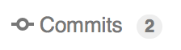

Git y GitHub para paquetes de R
Si se toma en serio el desarrollo de software, debe aprender Git. Git es un sistema de control de versiones, una herramienta que rastrea los cambios en su código y comparte esos cambios con otros. Git es más útil cuando se combina con GitHub, un sitio web que le permite compartir su código con el mundo, solicitar mejoras a través de pull requests (solicitudes de extracción) y seguir issues (problemas). Git + GitHub es el sistema de control de versiones más popular para desarrolladores de paquetes de R (lo atestiguan los miles de paquetes de R alojados en GitHub).
Git y GitHub son generalmente útiles para todo el desarrollo de software y análisis de datos, no solo para paquetes de R. Se ha incluido aquí, porque es muy útil cuando se hace un paquete. No hay forma de que uno pueda ser tan productivo sin Git y GitHub a la espalda, lo que permite detectar errores rápidamente y colaborar fácilmente con otros.
¿Por qué Git + GitHub?
Hace que compartir su paquete sea fácil. Cualquier usuario de R puede instalar su paquete con solo dos líneas de código:
install.packages("devtools") devtools::install_github("username/packagename")GitHub es una excelente manera de crear un sitio web para su paquete. Los lectores pueden navegar fácilmente por el código y leer la documentación (a través de Markdown). Pueden informar errores, sugerir nuevas funciones con GitHub issues y proponer mejoras a su código con pull requests.
¿Alguna vez ha intentado escribir códigos de forma colaborativa con alguien enviando archivos de un lado a otro por correo electrónico o en una carpeta de Dropbox? Se necesita un gran esfuerzo para asegurarse de que esas dos personas no estén trabajando en el mismo archivo y sobrescriban los cambios de los demás. Con Git, ambos pueden trabajar en el mismo archivo al mismo tiempo. Git combinará sus cambios automáticamente o le mostrará todas las ambigüedades y conflictos.
¿Alguna vez presionó
sen lugar de Cmd + S para guardar su archivo? Es muy fácil introducir accidentalmente un error que tarda unos minutos en rastrear. Git hace que este problema sea fácil de detectar porque le permite ver exactamente qué ha cambiado y deshacer cualquier error.
Usted puede hacer muchas de estas mismas cosas con otras herramientas (como subversion o mercurial) y otros sitios web (como gitlab y bitbucket). Git es muy útil junto con GitHub y viceversa, así que no vale la pena hacer ningún esfuerzo por distinguir entre las características que pertenecen a Git y las que pertenecen a GitHub. Sin embargo Git + GitHub es el sistema más fácil de usar (especialmente para los nuevos desarrolladores), sobre todo porque su popularidad significa que la respuesta o solución a cada posible pregunta o problema se puede encontrar en StackOverflow.
Esto no quiere decir que Git sea fácil de aprender. Es probable que sus experiencias iniciales con Git sean frustrantes y con frecuencia maldecirá la terminología extraña y los mensajes de error inútiles. Afortunadamente, hay muchos tutoriales disponibles en línea, y aunque no siempre están bien escritos (muchos brindan mucha información, pero poca orientación sobre qué hacer con ella o por qué debe importar), puede dominar absolutamente a Git con un poco de práctica. No se rinda! Persevere y desbloqueará la superpotencia de la colaboración de código.
RStudio, Git y GitHub
RStudio simplifica el uso diario de Git. Una vez que haya configurado un proyecto para usar Git, verá un nuevo ícono de panel y barra de herramientas. Estos proporcionan accesos directos a los comandos Git más comúnmente utilizados. Sin embargo, debido a que solo hay un puñado de los más de 150 comandos de Git disponibles en RStudio, también debe estar familiarizado con el uso de Git desde shell (también conocido como la línea de comandos o la consola). También es útil estar familiarizado con el uso de Git en un shell porque si se queda atascado necesitará buscar una solución con los nombres de los comandos de Git.
La forma más fácil de acceder a un shell desde RStudio es Herramientas > Shell. Esto abrirá un nuevo shell ubicado en el directorio raíz de su proyecto. (NB: en Windows, esto abre un bash shell, el shell estándar de Linux, que se comporta de forma un poco diferente del shell cmd.exe usual).
No se preocupe si nunca antes ha usado el shell porque es muy similar al uso de R. La principal diferencia es que en lugar de funciones, llama a comandos, que tienen una sintaxis ligeramente diferente. Por ejemplo, en R puede escribir f(x, y = 1), donde en el intérprete de comandos escribiría f x --y=1 o f x -y1. Además, aunque los comandos de shell son incluso menos regulares que las funciones de R, afortunadamente solo necesita estar familiarizado con algunos. En este capítulo, no hará mucho en el shell además de ejecutar los comandos de Git. Sin embargo, es una buena idea aprender los tres comandos de shell más importantes:
pwd: print working directory. Esto le dice en qué directorio está actualmente.cd <name>: change directory. Usecd ..para subir al directorio anterior en jerarquía.ls: list files. Muestra todos los archivos en el directorio actual.
Si nunca ha usado el shell antes, le recomiendo usar Terminus. Es una forma divertida de aprender los conceptos básicos de shell. También se recomienda echar un vistazo a los videos de Philip Guo Basic Unix-like command line tutorial, y en http://www.ee.surrey.ac.uk/Teaching/Unix/unix1.html y https://p1k3.com/userland-book/.
Configuración inicial
Si nunca antes ha usado Git o GitHub, comience instalando Git y creando una cuenta de GitHub. Luego, una los dos:
Instalar Git:
- Windows: http://git-scm.com/download/win.
- OS X: http://git-scm.com/download/mac.
- Debian/Ubuntu:
sudo apt-get install git-core. - Otras distros de Linux: http://git-scm.com/download/linux.
Dígale a Git su nombre y dirección de correo electrónico. Estos se utilizan para etiquetar cada commit para que cuando comience a colaborar con otros, quede claro quién hizo cada cambio. En el shell, ejecute:
git config --global user.name "YOUR FULL NAME" git config --global user.email "YOUR EMAIL ADDRESS"(Puede verificar si está configurado correctamente ejecutando
git config --global --list.)Cree una cuenta en GitHub, https://github.com (el plan gratuito está bien). Use la misma dirección de correo electrónico que usó arriba.
Si es necesario, genere una clave SSH. Las claves SSH le permiten comunicarse de forma segura con sitios web sin una contraseña. Hay dos partes para una clave SSH: una pública y una privada. Las personas con su clave pública pueden cifrar de forma segura los datos que solo pueden leer personas con su clave privada.
Puede verificar si ya tiene un par de claves SSH ejecutando:
file.exists("~/.ssh/id_rsa.pub")Si eso devuelve
FALSE, necesitará crear una nueva clave. Puede seguir las instrucciones en GitHub o use RStudio. Vaya a las preferencias de RStudio, elija el panel Git/SVN y haga clic en “Create RSA key…”:

Git config
- Déle a GitHub su clave pública SSH: https://github.com/settings/ssh. La forma más fácil de encontrar la clave es hacer clic en “View public key” en el panel de preferencias de Git/SVN de RStudio.
Cree un repositorio local en Git
¡Ahora que ha instalado y configurado Git, puede usarlo! Para usar GitHub con su paquete, necesitará inicializar un repositorio local, o repo para abreviar. Esto crea un directorio .git que almacena archivos de configuración y una base de datos que registra los cambios en su código. Un nuevo repositorio solo existe en su computadora; aprenderá cómo compartirlo con otros en breve.
Para crear un nuevo repo:
En RStudio, vaya a las opciones de proyecto, luego al panel Git/SVN. Cambie el “Version control system” de “None” a “Git”:

New repo
Se le pedirá que reinicie RStudio.
En un shell, ejecute
git init. Reinicie RStudio y vuelva a abrir su paquete.
Una vez que Git se haya inicializado, verá dos nuevos componentes:
- El git pane, en la esquina superior derecha, le muestra qué archivos han cambiado e incluye botones para los comandos más importantes de Git:

Panel de Git
- El menú git dropdown, que se encuentra en la barra de herramientas, incluye los comandos de Git y GitHub que se aplican al archivo actual:

Panel de Git
Revise lo que cambió
El primer beneficio de Git es que puede ver fácilmente los cambios que ha realizado. Esto es realmente útil, ya que a menudo accidentalmente se escriben mal los atajos de teclado, dejando caracteres extraviados en el código. El panel de RStudio Git enumera cada archivo que se ha agregado, modificado o eliminado. El ícono describe el cambio:
 Modified. Ha cambiado los contenidos del archivo.
Modified. Ha cambiado los contenidos del archivo. Untracked. Ha agregado un nuevo archivo que Git no había visto antes.
Untracked. Ha agregado un nuevo archivo que Git no había visto antes. Deleted. Ha eliminado un archivo.
Deleted. Ha eliminado un archivo.
Puede obtener más detalles sobre modificaciones con un “diff”,  . Esto abra una nueva ventana mostrando las differencias detalladas:
. Esto abra una nueva ventana mostrando las differencias detalladas:

Los colores de fondo le indican si el texto se ha agregado (verde) o eliminado (rojo). (Si es daltónico, puede usar los números de línea en las dos columnas de la izquierda como guía: un número en la primera columna identifica la versión anterior, un número en la segunda columna identifica la nueva versión). Las líneas grises de el código de arriba y abajo de los cambios le da contexto adicional.
En el shell, use git status para echar un vistazo a los cambios y git diff para mostrar diferencias detalladas.
Grabar los cambios
La unidad de trabajo fundamental en Git es un commit. Un commit toma una instantánea de su código en un punto específico en el tiempo. Usar un commit de Git es como usar anclajes y otras protecciones al escalar. Si cruza una cara de roca peligrosa, debe asegurarse de haber usado protección para atraparse si se cae. Los commits juegan un papel similar: si comete un error, no puede dejar atrás el commit anterior. Escribir código sin hacer commits es como escalar libremente: puede viajar mucho más rápido a corto plazo, pero a largo plazo las posibilidades de una falla catastrófica son altas. Al igual que la protección de escalada, debe ser juicioso en el uso de los commits. Hacer commits con demasiada frecuencia disminuirá su progreso; use más commits cuando esté en territorio incierto o peligroso. Los commits también son útiles para otros, porque muestran su viaje, no solo el destino.
Hay cinco componentes principales para cada commit:
Un identificador único, llamado SHA (abreviatura de secure hash algorithm (algoritmo de hash seguro).
Un conjunto de cambios que describe qué archivos se agregaron, modificaron y eliminaron.
Un mensaje de commit legible para humanos.
Un familiar, el commit que vino antes de este. (Hay dos excepciones a esta regla: el commit inicial no tiene un familiar, y los merges (fusiones), de las que aprenderá más adelante, tienen dos familiares).
Un autor.
Usted crea un commit en dos etapas:
Le hace stage a sus archivos, diciéndole a Git qué cambios deberían incluirse en el siguiente commit.
Le hace commit a los archivos a los que les hizo staged, describiendo los cambios con un mensaje.
En RStudio, el staging y el commit se realizan en el mismo lugar, la ventana de confirmación, que puede abrir haciendo clic en  o presionando Ctrl + Alt + m.
o presionando Ctrl + Alt + m.

La ventana de confirmación se compone de tres paneles:
El panel superior izquierdo muestra el estado actual en el medio del panel de Git en la ventana principal de RStudio.
El panel inferior muestra la diferencia del archivo seleccionado actualmente.
El panel superior derecho es donde ingresará el mensaje de confirmación, un mensaje legible por humanos que resume los cambios realizados en el commit. Más sobre eso en breve.
(Sí, esta es exactamente la misma ventana que ve cuando hace clic
Para crear un nuevo commit:
Guarde sus cambios.
Abra la ventana de commit haciendo click en
o presionando Ctrl + Alt + m.Seleccione archivos. Para preparar (seleccionar) un sólo archivo para su inclusión, marcque su cuadro de verficación. Para preparar todos los archivos, presione Ctrl/Cmd + A, luego haga click en
 .
.A medida que prepare cada archivo, verá que su estado cambia. El ícono cambiará las columnas de la derecha (estado sin preparar) a la izquierda (estado preparado), y es posible que vea uno de dos íconos nuevos:
Added: : después de preparar un archivo sin seguimiento, Git ahora sabe que desea agregarlo al repositorio.
Renamed: : Si cambia el nombre de un archivo, Git inicialmente lo ve como una eliminación y adición. Una vez que realice los dos cambios, Git reconocerá que se trata de un cambio de nombre.
A veces verá estados en ambas columnas, e.g.
 . Esto significa que tiene cambios preparados y no preparados en el mismo archivo. Esto sucede cuando ha realizado algunos cambios, los ha preparado y luego ha realizado algunos más. Al hacer clic en la casilla de verificación se prepararán los nuevos cambios, al hacer clic de nuevo se eliminarán ambos conjuntos de cambios.
. Esto significa que tiene cambios preparados y no preparados en el mismo archivo. Esto sucede cuando ha realizado algunos cambios, los ha preparado y luego ha realizado algunos más. Al hacer clic en la casilla de verificación se prepararán los nuevos cambios, al hacer clic de nuevo se eliminarán ambos conjuntos de cambios.Archivos preparados, como está arriba.
Escriba un mensaje de confirmación (panel superior derecho) que describe los cambios que ha realizado. La primera línea de un mensaje de confirmación se llama línea de asunto y debe ser breve (50 caracteres o menos). Para commits complicados, puede seguirlo con una línea en blanco y luego un párrafo o una lista con viñetas que proporcione más detalles. Escriba mensajes de manera imperativa, como decirle a alguien qué hacer: “corregir este error”, no “solucionó este error” o “este error fue reparado”.
Click Commit.
Los archivos preparados son un poco más complicados en el shell. Utilice git add para crear archivos nuevos y modificados, y git rm para preparar los archivos eliminados. Para crear el commit, use git commit -m <message>.
Buenas prácticas de Commit
Idealmente, cada commit debería ser mínima pero completa:
Minima: Un commit solo debe contener cambios relacionados con un único problema. Esto hará que sea más fácil entender el commit de un vistazo y describirlo con un simple mensaje. Si descubre un nuevo problema, debe hacer un commit por separado.
Completa: Un commit debería resolver el problema que afirma resolver. Si cree que ha solucionado un error, el commit debe contener una prueba unitaria que confirme que tiene razón.
Cada commit debería:
Sea conciso, pero sugestivo. A simple vista, debería poder ver lo que hace un commit. Pero debe haber suficientes detalles para que pueda recordar (y comprender) lo que se hizo.
Describa el porqué, no el qué. Como siempre puede recuperar la diferencia asociada a un commit, el mensaje no necesita decir exactamente qué cambió. En su lugar, debe proporcionar un resumen de alto nivel que se centre en las razones del cambio.
Si hace esto:
Será más fácil trabajar con otros. Por ejemplo, si dos personas han cambiado el mismo archivo en el mismo lugar, será más fácil resolver conflictos si los commits son pequeños y está claro por qué se hizo cada cambio.
Los recién llegados al proyecto pueden entender más fácilmente el historial leyendo los registros de confirmación.
Puede cargar y ejecutar su paquete en cualquier punto de su historial de desarrollo. Esto puede ser tremendamente útil con herramientas como bisectr, que le permiten usar la búsqueda binaria para encontrar rápidamente el commit que introdujo un error.
Si puede averiguar exactamente cuándo se introdujo un error, puede comprender fácilmente lo que estaba haciendo (¡y por qué!).
Usted podría pensar que debido a que nadie más revisará su repositorio, no vale la pena escribir buenos mensajes de confirmación. Pero tenga en cuenta que tiene un colaborador muy importante futuro: ¡usted! Si dedica un poco de tiempo a pulir sus mensajes de confirmación, su futuro-usted, le agradecerá si necesita realizar una autopsia en un error.
Recuerde que estas directivas son aspiracionales. No debería dejar que se interpongan en su camino. Si mira el historial de confirmaciones de los repositorios, notará que muchos de ellos no son tan buenos, especialmente cuando empiece a sentirse frustrado por el hecho de que __todavía_ no logra arreglar un error. Esfuércese por seguir estas pautas, y recuerde que es mejor tener múltiples commits incorrectos que tener un commit perfecto.
Ignorar archivos
A menudo, hay archivos que no desea incluir en el repositorio. Pueden ser transitorios (como archivos de construcción LaTeX o C), muy grandes o generados a pedido. En lugar de cuidadosamente no prepararlos cada vez que se va a hacer commit, debería agregarlos a .gitignore. Esto evitará que se agreguen accidentalmente. La forma más sencilla de hacer esto es hacer clic derecho en el archivo en el panel de Git y seleccionar Ignorar:

Si usted quiere ignorar múltiples archivos, puede usar un comodín “glob” como *.png. Para aprender más acerca de las opciones, vea ignoring files en Pro-Git.
Algunos desarrolladores nunca hacen commit a archivos derivados, o archivos que pueden generarse automáticamente. Para un paquete en R esto significaría ignorar los archivos en los directorios NAMESPACE y man/ porque se generan a partir de comentarios. Desde una perspectiva práctica, es mejor hacer commit a estos archivos: los paquetes en R no tienen forma de generar archivos .Rd en la instalación, por lo que ignorar los archivos derivados significa que los usuarios que instalen su paquete en GitHub no tendrán documentación.
Deshacer un error
Lo mejor de usar commits es que puede deshacer los errores. RStudio lo hace particularmente fácil:
Para deshacer los cambios que acaba de hacer, haga clic derecho en el archivo en el panel de Git y seleccione “revert”. Esto hará que los cambios vuelvan al commit. Cuidado: ¡no puede deshacer esta operación!
Puede también deshacer cambios en solo una parte de un archivo en la ventana diff. Busque el botón discard chunk encima del bloque de cambios que quiere deshacer:
 . También puede descartar cambios en líneas individuales o texto seleccionado.
. También puede descartar cambios en líneas individuales o texto seleccionado.Si hizo commit a cambios demasiado pronto, puede modificar el commit anterior configurando los cambios adicionales. Antes de hacer clic en commit, seleccione
 . (No haga esto si ha enviado el commit anterior a GitHub; en realidad está reescribiendo el historial, lo cual debe hacerse con cuidado cuando lo hace en público).
. (No haga esto si ha enviado el commit anterior a GitHub; en realidad está reescribiendo el historial, lo cual debe hacerse con cuidado cuando lo hace en público).
Si no captó el error de inmediato, tendrá que mirar hacia atrás en la historia y descubrir dónde ocurrió:
- Abra la ventana del historial haciendo click
 en el panel de Git.
en el panel de Git.

La ventana del historial está dividida en dos partes. La parte superior enumera cada commit con su repositorio. La parte inferior muestra el commit: el SHA (el ID único), el autor, la fecha, el responsable y los cambios en el commit.
- Navegue hacia atrás en el tiempo hasta que encuentre el commit donde ocurrió el error. Escriba el SHA: ese es el commit que ocurrió antes del error, así que será bueno.
Ahora puede usar ese SHA en el shell:
Vea cómo se veía el archivo en el pasado para poder copiar y pegar el código anterior:
git show <SHA> <filename>O copie la versión desde el pasado al presente:
git checkout <SHA> <filename>
En ambos casos, tendrá que terminar organizando y haciendo commit a los archivos.
(También es posible utilizar Git como si retrocediera en el tiempo y evitar que se produjera el error. Esta es una técnica avanzada llamada rebasing history. Como puede imaginar, retroceder en el tiempo para cambiar el pasado puede tener una impacto profundo en el presente. Puede ser útil, pero debe hacerse con extremo cuidado).
Si aún así está atascado, pruebe http://sethrobertson.github.io/GitFixUm/fixup.html o http://justinhileman.info/article/git-pretty/. Allí se ofrecen enfoques paso a paso para solucionar muchos problemas comunes (¡y no tan comunes!).
Sincronizándose con GitHub
Hasta ahora solo hemos estado trabajando localmente, usando commits para seguir el progreso de un proyecto y proporcionar puntos de control seguros. Sin embargo, Git realmente brilla cuando comienza a compartir su código con otros en GitHub. Si bien hay otras opciones, se recomienda GitHub porque es gratis para proyectos de código abierto, tiene todas las características que necesitará y es una opción popular en el mundo de R.
Para publicar, o hacer push de su código a GitHub:
Cree un nuevo repo en GitHub: https://github.com/new. Dele el mismo nombre que su paquete e incluya el título del paquete como la descripción del repositorio. Deje todas las demás opciones como están, luego haga clic en Submit.
Abra una ventana de shell, luego siga las instrucciones en la nueva página del repositorio. Se verán algo así:
git remote add origin git@github.com:hadley/r-pkgs.git git push -u origin masterLa primera línea le dice a Git que su repositorio local tiene una versión remota en GitHub, y lo llama “origen”. La segunda línea lleva todo su trabajo actual a ese repositorio.
Ahora hagamos un commit y verifiquemos las actualizaciones del repositorio remoto:
Modifique la
DESCRIPTIONpara agregar los camposURLyBugReportsde ese enlace a su nuevo sitio GitHub. Por ejemplo, dplyr tiene:URL: http://github.com/hadley/dplyr BugReports: http://github.com/hadley/dplyr/issuesGuarde el archivo y haga un commit (con el mensaje “Actualizando DESCRIPTION para agregar enlaces al sitio de GitHub”).
Haga Push de sus cambios a GitHub haciendo click en
 . (Es lo mismo que correr
. (Es lo mismo que correr git pushen el shell).Vaya a su página de GitHub y mire la
DESCRIPTION.
Por lo general, cada push incluirá múltiples commits. Esto se debe a que hace push con mucha menos frecuencia de la que hace commits. La frecuencia con la que hace push contra los commits depende completamente de usted, pero hacer push al código significa publicar el código. Así que esfuércese por poner el código que funcione.
Para garantizar que su código esté limpio, le recomiendo que siempre ejecute R CMD check antes de hacer push (un tema que aprenderá en el capítulo sobre comprobación automatizada). Si desea publicar un código que no funciona (todavía), le recomiendo usar un branch, como aprenderá más adelante en bifurcación.
Una vez esté conectado a su repo en GitHub, the panel de Git le mostrará cuántos commits tiene localmente que no están en GitHub:  . Este mensaje indica que hay un commit localmente (my branch) que no está en GitHub (“origin/master”).
. Este mensaje indica que hay un commit localmente (my branch) que no está en GitHub (“origin/master”).
Beneficios de usar GitHub
Obtiene una página web decente. La GitHub page para su proyecto, e.g. https://github.com/hadley/testthat (el repo en GitHub para testthat), enumera todos los archivos y directorios en su paquete. Los archivos
.Rserán formateados con sintaxis resaltada, y los archivos.md/.Rmdserán reproducidos como HTML. Y, si incluye un archivoREADME.mden el directorio de nivel superior, se mostrará en la página de inicio. Aprenderá más sobre los beneficios de crear este archivo en README.md.Hace que sea fácil para cualquier persona instalar su paquete (y beneficiarse de su arduo trabajo):
devtools::install_github("<your_username>/<your_package>")Puede rastrear el historial del proyecto en la vista de confirmación, e.g. https://github.com/hadley/testthat/commits/master. Cuando se está trabajando en un paquete con otros, a menudo se mantiene esta página abierta para que pueda ver en qué están trabajando. Los commits individuales muestran la misma información que se ve en la ventana commit/diff en RStudio.
Es fácil ver el historial de un archivo. Si navega a un archivo y hace clic en History, verá cada confirmación que afectó ese archivo. Otra vista útil es Blame; muestra el último cambio realizado en cada línea de código, quién realizó el cambio y el compromiso al que pertenece el cambio. Esto es tremendamente útil cuando busca un error.
Puede saltar directamente a estas páginas desde RStudio con el menú desplegable de Git en la barra de herramientas principal:
- Puede comentar commits. Para comentar sobre el commit en su totalidad, use el cuadro de comentarios en la parte inferior de la página. Para comentar en una línea individual, haga clic en el signo más que aparece cuando pasa el mouse sobre un número de línea,
 . Esta es una gran manera de avisar a sus colaboradores si ve un error o si tiene alguna pregunta. Es mejor que el correo electrónico porque es público, por lo que cualquiera que trabaje en el repositorio (presente y futuro) puede ver la conversación.
. Esta es una gran manera de avisar a sus colaboradores si ve un error o si tiene alguna pregunta. Es mejor que el correo electrónico porque es público, por lo que cualquiera que trabaje en el repositorio (presente y futuro) puede ver la conversación.
Trabajar con otros
Utilice push para enviar sus cambios a GitHub. Si trabaja con otras personas, ellos también envían sus cambios a GitHub. Pero, para ver sus cambios localmente, deberá hacer pull a sus cambios de GitHub. De hecho, para asegurarse de que todos estén sincronizados, Git solo le permitirá hacer push a un repositorio si ha recuperado la versión más reciente con un pull.
Cuando hace pull, Git primero descarga (fetches) todos los cambios y luego hace merges con los cambios que ha realizado. Un merge es un commit con dos parientes. Toma dos líneas de desarrollo diferentes y las combina en un solo resultado. En muchos casos, Git puede hacer esto automáticamente: por ejemplo, cuando se realizan cambios en diferentes archivos o en diferentes partes del mismo archivo. Sin embargo, si se realizan cambios en el mismo lugar en un archivo, tendrá que resolver el merge conflict usted mismo.
En RStudio, descubrirá que tiene un conflicto de combinación cuando:
Un pull falla con un error.
En el panel de Git, ve un estado como

Actualmente, RStudio no proporciona ninguna herramienta para ayudar con los conflictos de combinación, por lo que deberá usar la línea de comando. Se recomienda comenzar estableciendo su “estilo” de conflicto de combinación a diff3. El estilo diff3 muestra tres cosas cuando se produce un conflicto de combinación: los cambios locales, el archivo original y los cambios remotos. El estilo predeterminado es diff2, que solo muestra sus cambios y los cambios remotos. Esto generalmente hace que sea más difícil averiguar lo que sucedió.
Si se encontró con su primer conflicto de combinación, haga lo siguiente:
# Aborte este merge git merge --abort # Configure el estilo de conflicto git config --global merge.conflictstyle diff3 # Vuelva a intentar el merge git pullSi no está en medio de un conflicto de fusión, solo ejecute
git config --global merge.conflictstyle diff3
Para resolver un conflicto de combinación, debe abrir cada archivo con el estado . En cada archivo, encontrará un marcador de conflicto que se parece a esto:
<<<<<<< HEAD
||||||| merged common ancestors
=======
>>>>>>> remoteEsto muestra las tres versiones del código en conflicto:
En la parte superior, su código local.
En el medio, el código del último commit antes de la división entre las dos líneas de desarrollo (Esto falta en el estilo de conflicto predeterminado, por lo que si no lo ve, siga las instrucciones anteriores).
En la parte inferior, el código remoto que bajó de GitHub.
Es necesario que resuelva cada conflicto y decida qué versión es mejor o cómo combinar ambas versiones. Luego, antes de preparar el archivo, asegúrese de haber eliminado todos los marcadores de conflicto. Una vez que haya solucionado todos los conflictos, haga un nuevo commit y súbalo a GitHub.
Un par de consejos al corregir el texto generado por roxygen:
No arregle problemas en archivos
man/*.Rd. En lugar de eso, resuelva cualquier conflicto en los comentarios de roxygen subyacentes y vuelva a documentar el paquete.Combinar conflictos en el archivo
NAMESPACEevitará que vuelva a cargar o vuelva a documentar un paquete. Resuélvalos lo suficiente para que el paquete se pueda cargar, luego vuelva a documentar para generar un “NAMESPACE” limpio y correcto.
Manejar los conflictos de fusión es una de las partes más complicadas de Git. Es posible que necesite leer algunos tutoriales antes de entenderlo. Google y StackOverflow son excelentes recursos. Si se sientes terriblemente confundido, siempre puede abortar la combinación y volver a intentar ejecutando git merge --abort y luegogit pull.
Issues
Todos los repositorios de GitHub vienen con una página para rastrear problemas. ¡Úselo! Si encuentra un error al trabajar en otro proyecto, escriba una nota en la página de issues. Cuando tenga un proyecto más pequeño, no se preocupe demasiado por los hitos, las etiquetas y la asignación de problemas a personas específicas. Esos son más útiles una vez que supera una página de problemas (> 50). Una vez que llegue a ese punto, lea la guía de GitHub sobre problemas: https://guides.github.com/features/issues/.
Una técnica útil es cerrar issues desde un mensaje de commit. Simplemente coloque Closes #<issue number> en algún lugar de su mensaje de commit y GitHub cerrará el problema la próxima vez que le haga push. Lo mejor de cerrar los issues de esta manera es que crea un enlace desde el issue hasta el commit. Esto es útil si alguna vez tiene que volver al error y desea ver exactamente lo que hizo para solucionarlo. También puede vincular a issues sin cerrarlos; solo refiérase a #<issue number>.
Como aprenderá en NEWS.md, es una buena idea agregar una viñeta a NEWS.md cada vez que cierre un issue. El punto debe describir el problema en términos que los usuarios entiendan, a diferencia del mensaje de commit que se escribe para los desarrolladores.
Branches
A veces desea hacer grandes cambios en su código sin tener que molestar a su flujo principal de desarrollo. Tal vez quiera dividirlo en múltiples commits simples para que pueda rastrear fácilmente lo que está haciendo. Tal vez no esté seguro que lo que ha hecho es el mejor enfoque y quiere que alguien revise su código. O bien, tal vez desee probar algo experimental (puede fusionarlo solo si el experimento tiene éxito). Los branches y pull requests proporcionan herramientas poderosas para manejar estas situaciones.
Aunque no se haya dado cuenta, ya está usando ramas. La rama predeterminada se llama master; es donde ha estado guardando sus commits. Si sincroniza su código a GitHub, también tendrá una rama llamada origin/master: es una copia local de todos los commits en GitHub, que se sincroniza cuando hace pull. git pull hace dos cosas:
git fetch origin masterpara actualizar el branch localorigin/mastercon los últimos commits desde GitHub.git merge origin/masterpara combinar los cambios remotos con sus cambios.
Es útil crear sus propios branches cuando quiera (temporalmente) separarse de la línea principal de desarrollo. Puede crear una nueva rama con git checkout -b <branch-name>. Los nombres deben estar en minúsculas y números, con - para separar las palabras.
Cambie entre las ramas con git checkout <branch-name>. Por ejemplo, para volver a la línea principal de desarrollo use git checkout master. También puede usar el conmutador de rama en la parte superior derecha del panel de Git:
Si ha olvidado el nombre de su rama en el shell, puede usar git branch para listar todas las ramas existentes.
Si intenta sincronizar esta rama con GitHub desde RStudio, notará que push y pull están deshabilitados . Para habilitarlos, primero tendrá que decirle a Git que su sucursal local tiene un equivalente remoto:
git push --set-upstream origin <branch-name>Después de haber hecho eso una vez, puede usar los botones de push y pull como de costumbre.
Si ha estado trabajando en un branch por un tiempo, podría integrar ese trabajo en el branch master. Para integrar ese trabajo en su branch, ejecute git merge master. Deberá resolver cualquier conflicto de fusión (ver arriba). Lo mejor es hacer esto con bastante frecuencia: cuanto menos diverge la rama del master, más fácil será fusionarse.
Una vez que haya terminado de trabajar en un branch, vuelva a fusionarla en el master y luego elimine la rama:
git checkout master
git merge <branch-name>
git branch -d <branch-name>(Git no le permitirá eliminar una rama a menos que la haya fusionado nuevamente en la rama master. Si desea abandonar una rama sin fusionarla, deberá forzar la eliminación con -D en lugar de - d. Si borra accidentalmente una rama, no se preocupe. Por lo general, es posible recuperarla. Consulte los consejos para deshacer errores).
Haciendo un pull request
Un pull request es una herramienta para proponer y discutir cambios antes de fusionarlos en un repositorio. El uso más común para una solicitud de extracción es contribuir al código de otra persona: es la forma más fácil de proponer cambios al código que usted no controla.
A continuación, aprenderá sobre los pull requests para realizar cambios en su propio código. Esto puede parecer un poco inútil porque no los necesita, ya que puede modificar directamente su código. Pero los pull requests son sorprendentemente útiles porque le permiten obtener comentarios sobre los cambios propuestos. Se usan con frecuencia en RStudio para obtener retroalimentación antes de fusionar los cambios importantes.
GitHub tiene buena documentación sobre el uso de pull requests: https://help.github.com/articles/using-pull-requests/. En este capítulo, nos centraremos en los aspectos básicos que necesita saber para utilizar los pull requests de manera efectiva, y se mostrará cómo encajan con los comandos de Git que ha aprendido hasta ahora.
Para crear un pull request, se crea una rama, se le hace commit al código y luego se hace push a la rama hacia GitHub. La próxima vez que vaya al sitio web de GitHub, verá un encabezado que lo invita a enviar un pull request. También puede hacerlo por:
- Cambiar branches:
- Haciendo click en

Esto creará una página que se verá así:
Este pull request, que soluciona un par de pequeños problemas, es uno que se envió al sitio GitHub de este libro.
Hay tres partes de un pull request:
Una conversation, , donde puede discutir los cambios como un todo.
La vista de commits, , donde puede ver cada commit individual.
Los file changes, , donde ve la diferencia general de los commits, y puede comentar líneas individuales.
Una vez que haya terminado de discutir un pull request, puede elegir fusionarla o eliminarla. Fusionarlo equivale a ejecutar git merge <branchname> desde el shell; eliminar es equivalente a git branch -d <branchname>.
Presentar un pull request a otro repo
Para enviar un pull request a un repo que no le pertenece, primero necesita crear una copia del repo en la que sea propietario, llamado un fork, y luego clone ese fork en su computador:
Haga Fork al repositorio original yendo al repositorio en GitHub y haciendo click en
 . Esto crea una copia del repositorio que le pertenece.
. Esto crea una copia del repositorio que le pertenece.Haga Clone al repositorio al que le hizo forked para crear una copia local del repositorio remoto. Es posible hacerlo en RStudio (usando “Create New Project” desde “Version Control”), pero quizás es más fácil hacerlo desde el shell:
git clone git@github.com:<your-name>/<repo>.git cd <repo>
Un fork es una copia estática del repositorio: una vez que lo ha creado, GitHub no hace nada para mantenerlo sincronizado con el repositorio original. Este es un problema porque mientras trabaja en un pull request, pueden ocurrir cambios en el repositorio original. Para mantener el repositorio al que le hizo forked y el original en sincronización, comience diciéndole a su repositorio sobre el repositorio original:
git remote add upstream git@github.com:<original-name>/<repo>.git
git fetch upstreamA continuación, puede fusionar los cambios del repo upstream a su copia local:
git merge upstream/masterCuando trabaje en un repositorio forked, se recomienda que no trabaje en el branch master. Debido a que en realidad no está trabajando en la línea principal de desarrollo para ese repositorio, usar su rama principal hace que las cosas sean confusas.
Si siempre crea pull requests en branches, puede hacer que sea un poco más fácil mantener su repositorio local sincronizado con el repositorio original ejecutando:
git branch -u upstream/master Luego puede actualizar su repositorio local con el siguiente código:
git checkout master
git pullLos cambios pueden ocurrir mientras está trabajando en el pull request, así que recuerde combinarlos en su branch con:
git checkout <my-branch>
git merge masterUn pull request (PR) es un mapeo uno a uno a un branch, por lo que también puede utilizar esta técnica para realizar actualizaciones basadas en la discusión del pull request. No cree un nuevo pull request cada vez que realice un cambio; en su lugar, solo debe hacer push al branch en el que se basa el PR y la página web del PR se actualizará automáticamente.
El siguiente diagrama ilustra los principales pasos para crear un pull request y actualizar la solicitud a medida que cambia el repositorio original:

Revisar y aceptar pull requests
A medida que su paquete se vuelva más popular, es probable que reciba pull requests. Recibir un pull request es fantástico. ¡Alguien no solo se preocupa por su paquete lo suficiente como para usarlo, sino que realmente leyó el código fuente e hizo una mejora!
Cuando reciba un pull request, se recomienda que la revise utilizando el enfoque de tres pasos descrito por Sarah Sharp. Se resume las tres fases a continuación, pero se recomienda leer el artículo completo en http://sarah.thesharps.us/2014/09/01/the-gentle-art-of-patch-review/:
¿Es una buena idea? Si no cree que la contribución es adecuada para su proyecto, es educado avisar al contribuyente lo más rápido posible. Agradézcales por su trabajo y vuelva a centrarlos en un área mejor para trabajar.
¿Es de enfoque general? En este punto, debe enfocarse en la idea general: ¿han modificado las funciones correctas de la manera correcta? Evite criticar problemas menores de estilo (esa es la fase final); en su lugar, solo proporciona un puntero a sus preferencias de estilo, e.g. http://r-pkgs.had.co.nz/style.html.
¿Está pulido? En la fase de revisión final, asegúrese de que las partes que no son de código del PR estén pulidas. Indique al colaborador que actualice la documentación, señale los errores ortográficos y sugiera una mejor redacción.
Se recomienda pedirle al colaborador que incluya un punto en
NEWS.md, describa brevemente la mejora y agradezca con su nombre de usuario de GitHub. Más detalles a seguir en publicación posterior.
Una vez completada la discusión, puede incorporar los cambios haciendo clic en el botón de merge. Si el botón no funciona, GitHub proporciona algunas instrucciones sobre cómo hacerlo desde la línea de comandos. Si bien ya ha visto todas las piezas, es útil leer esto para que comprenda qué está sucediendo exactamente.
# Crea un nuevo, y lo sincroníza con el pull request
git checkout -b <branch> master
git pull https://github.com/<user>/<branch>.git patch-3
# Hace merge a los cambios dentro de la línea principal de desarrollo
git checkout master
git merge --no-ff <branch>
# Resuelva conflictos, haga stage y add.
# Sincroniza sus cambios locales con GitHub
git push origin masterAprenda más
Git y GitHub son un conjunto de herramientas ricos y poderosos, y no hay forma de que este capítulo le haya enseñado todo lo que necesita saber. Sin embargo, ahora debe tener los conocimientos básicos para ser eficaz, y debe estar en una buena posición para aprender más. Algunos buenos recursos son:
GitHub help, https://help.github.com, no solo le enseña sobre GitHub, sino que también tiene buenos tutoriales sobre muchas características de Git.
Si desea obtener más información sobre los detalles de Git, lea Pro Git de Scott Chacon y Ben Straub.
Finalmente, StackOverflow es una parte vital de Git: cuando tiene un problema que no sepa cómo resolver, StackOverflow debería ser su primer recurso. Es muy probable que alguien ya haya tenido exactamente el mismo problema que usted, y que haya una variedad de enfoques y soluciones para elegir.